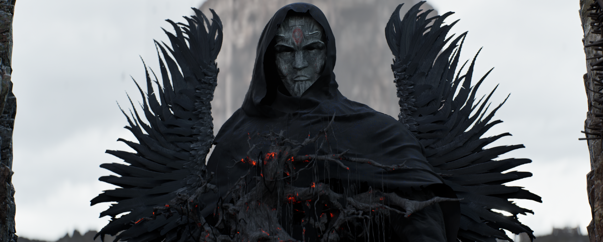

The tower as an anchor.
A strong central mass establishes a destination beyond the foreground. The small figure gives the architecture a human scale.
 JUNCHAO ZHU / ENVIRONMENT & CHARACTER STUDY
JUNCHAO ZHU / ENVIRONMENT & CHARACTER STUDYRUINS / STILLNESS / EMERGENCE
A cinematic study bringing a weathered settlement and a dark, winged figure into the same visual world.
The sequence moves from an expansive view of the ruins into a close encounter with the character. Rough masonry, still water and pale skies contrast with the figure's feathered silhouette and ember-like details.
01 / THE SEQUENCE
A wide view establishes the settlement before the camera reveals the figure at its centre.
Presented from the supplied screen recording, not labelled as a final master export. Audio is retained from the source; credits and public-use permissions remain to be confirmed.
02 / NARRATIVE PREMISE
A proposed fictional reading developed for this portfolio presentation.
When a settlement falls silent, what remains to remember it?
Beyond the water stands a tower that has outlived its inhabitants. Stone walls hold the traces of rooms, paths and ordinary lives. At the edge of the ruins, a hooded watcher remains, neither fully part of the landscape nor separate from it.
Its wings are not a promise of escape. They carry the weight of the place: broken forms, dark feathers and a faint heat beneath the surface. As the wings emerge, the stillness becomes a threshold between what has disappeared and what might return.
山河沉默，遗迹仍在。一位守望者停留于水岸，以羽翼承载这座失落聚落的记忆。展翼不是逃离，而是对尚未熄灭之物的回应。
03 / ENVIRONMENT
The tower anchors the view while darker foreground ruins frame the water and distant settlement.
A strong central mass establishes a destination beyond the foreground. The small figure gives the architecture a human scale.
Weathered stone, exposed timber and uneven ground give the setting its sense of age and abandonment.
Pale distance and reflective water separate the layers, while the dark foreground holds the viewer near the character.
04 / CHARACTER PRESENCE
A stone-like face, a dark hood and irregular wings form the visual centre of the close-up.

The pale background separates the wing shapes from the environment. Restrained red details interrupt the otherwise cool palette, suggesting an internal force without explaining it literally.
05 / PROJECT SCOPE
This presentation focuses on the supplied sequence and two project stills. It demonstrates the visible environment composition and character staging without claiming original authorship of every model, material, animation or effect.
Asset credits, exact production responsibilities and technical breakdowns will be added once confirmed. The next useful evidence is a matching unlit or white-material scene view, the lighting setup and the source of the winged character.